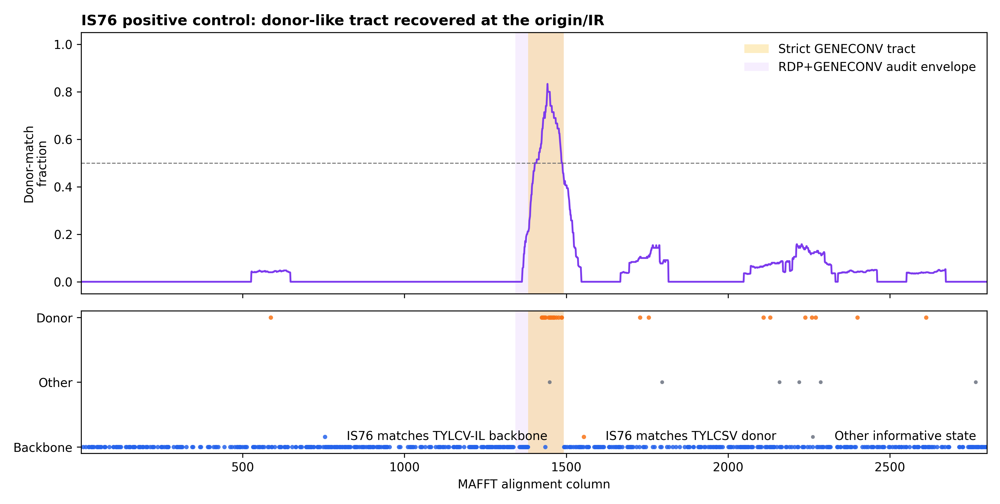
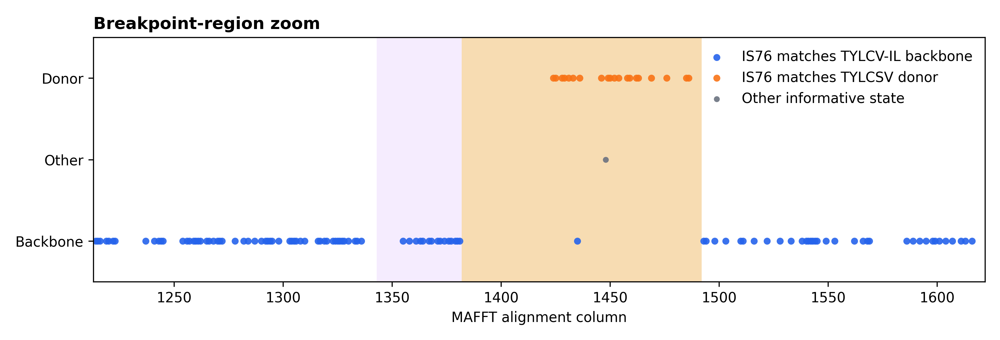
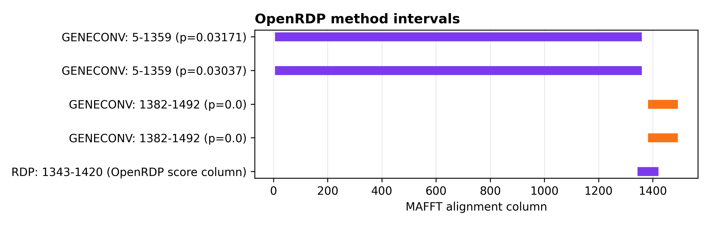
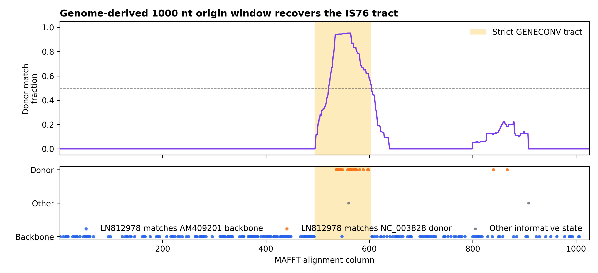

The SeqScape recombination wrapper recovered the known TYLCV-IS76
resistance-breaking recombinant signal. In the strict screen
(p <= 0.05), the consensus event resolves:
IS76_LN812978TYLCV_IL_AM409201TYLCSV_NC_0038281382-1492geneconv628 informative sitesThe audit run retains RDP’s score-like output and merges it with
GENECONV over the same tract envelope (1343-1492). This is
reported separately because the RDP output column is not a valid
probability in this OpenRDP run (36.36, greater than 1),
while GENECONV gives the strict significant call.
Input alignment:
/Users/gerritkoorsen/ciderseq-mono/cideseq-mono/runs/tocsv_260203_full_aws_20260612/full_run/comparators/is76_control_alignment.fasta
Positive-control metadata:
/Users/gerritkoorsen/ciderseq-mono/cideseq-mono/runs/tocsv_260203_full_aws_20260612/full_run/comparators/is76_positive_control.json
| role | id | description |
|---|---|---|
| known recombinant | IS76_LN812978 | TYLCV-IS76 isolate G8 (Morocco) |
| backbone parent | TYLCV_IL_AM409201 | TYLCV-IL isolate RE4 (Reunion, 2004) |
| donor parent | TYLCSV_NC_003828 | TYLCSV reference |
The metadata file records the published TYLCV-IS76 tract as approximately 76 nt. The local control annotation places the recovered signal in the intergenic region immediately downstream of the conserved origin motif, with a reconstructed tract range of 57-103 nt.
| run | recombinant | backbone_parent | donor_parent | methods | breakpoint_columns | min_pvalue | role_support |
|---|---|---|---|---|---|---|---|
| strict p<=0.05 | IS76_LN812978 | TYLCV_IL_AM409201 | TYLCSV_NC_003828 | geneconv | 1382-1492 | 0.0 | 628 |
| RDP audit p<=1.0 | IS76_LN812978 | TYLCV_IL_AM409201 | TYLCSV_NC_003828 | geneconv,rdp | 1343-1492 | 0.0 | 628 |
All OpenRDP methods completed in the strict run:
| method | strict_status |
|---|---|
| rdp | ok |
| geneconv | ok |
| maxchi | ok |
| chimaera | ok |
| threeseq | ok |
| bootscan | ok |
| siscan | ok |
To test the practical workflow from comparator genomes, the three positive-control records were extracted from:
/Users/gerritkoorsen/ciderseq-mono/cideseq-mono/runs/tocsv_260203_full_aws_20260612/full_run/comparators/comparator_panel.fasta
Origin-centered windows were cut around the conserved
TAATATTAC motif, aligned with MAFFT, and passed through the
same SeqScape recombination wrapper.
| input | records | consensus | recombinant | backbone_parent | donor_parent | methods | breakpoint_columns | min_pvalue | role_support | interpretation |
|---|---|---|---|---|---|---|---|---|---|---|
| 400 nt origin window from comparator genomes | 3 | detected | not resolved | not resolved | not resolved | bootscan,geneconv | 100-304 | 0.0 | 0 | event detected, but the window is too short for flank-based role resolution |
| 1000 nt origin window from comparator genomes | 3 | detected | LN812978 | AM409201 | NC_003828 | geneconv | 494-604 | 0.0 | 236 | event and expected parent roles recovered |
The 400 nt window is sensitive enough to detect the event, but its
significant intervals consume most of the window and leave no
informative flank support for parent-role polarisation. The 1000 nt
origin window resolves the expected roles directly from the extracted
genomes: LN812978 as recombinant, AM409201 as
backbone parent, and NC_003828 as donor parent.

Figure 1. Informative-site scan across the aligned TYLCV-IS76 positive control. Blue sites are columns where IS76 matches the TYLCV-IL backbone parent; orange sites are columns where IS76 matches the TYLCSV donor parent. The strict GENECONV tract is shaded yellow. The RDP+GENECONV audit envelope is shaded purple.

Figure 2. Zoom around the recovered breakpoint region. The donor-like informative sites concentrate inside the OpenRDP/GENECONV interval, while the flanking sequence returns to the TYLCV-IL backbone state.

Figure 3. OpenRDP method intervals in the positive-control run. GENECONV gives the strict significant interval; RDP reports an overlapping interval but its numeric field is score-like rather than a p-value in this run.

Figure 4. Informative-site scan for the 1000 nt origin-centered window extracted from the comparator genome FASTA. The donor-like sites concentrate in the strict GENECONV interval, while flanking sites support the TYLCV-IL backbone parent.
This positive-control test passes. The pipeline detects the known resistance-breaking recombination pattern and assigns the expected roles: IS76 as recombinant, TYLCV-IL as the backbone parent, and TYLCSV as the donor-side parent.
The strict result is intentionally conservative: it promotes the
GENECONV-supported event under p <= 0.05. The RDP audit
supports the same region geometrically, but is not counted as strict
statistical support because OpenRDP emits a value outside the
probability range for that method in this control.
For full-genome inputs, this validation supports using an origin-centered window with enough flanking sequence for role assignment. A 1000 nt window worked for this positive control; a 400 nt window detected recombination but did not retain enough flanking signal to resolve the parent roles.
Informative-site counts from the alignment:
The role_support value is the donor-matching plus
backbone-matching count (628); the six other informative
states are retained in the figure but are not counted as role
support.
Strict run:
PATH="/private/tmp/openrdp-validation-venv/bin:$PATH" PYTHONPATH=src \
python -m seqscape.cli recombination \
--alignment-fasta "/Users/gerritkoorsen/ciderseq-mono/cideseq-mono/runs/tocsv_260203_full_aws_20260612/full_run/comparators/is76_control_alignment.fasta" \
--methods rdp,geneconv,maxchi,chimaera,threeseq,bootscan,siscan \
--min-methods 1 \
--pvalue 0.05 \
--outdir "/Users/gerritkoorsen/ciderseq-mono/cideseq-mono/seqscape/runs/tylcv_is76_pipeline_validation_20260814/strict_p005"RDP audit run:
PATH="/private/tmp/openrdp-validation-venv/bin:$PATH" PYTHONPATH=src \
python -m seqscape.cli recombination \
--alignment-fasta "/Users/gerritkoorsen/ciderseq-mono/cideseq-mono/runs/tocsv_260203_full_aws_20260612/full_run/comparators/is76_control_alignment.fasta" \
--methods rdp,geneconv,maxchi,chimaera,threeseq,bootscan,siscan \
--min-methods 1 \
--pvalue 1.0 \
--outdir "/Users/gerritkoorsen/ciderseq-mono/cideseq-mono/seqscape/runs/tylcv_is76_pipeline_validation_20260814/rdp_audit_p1"Genome-derived 1000 nt origin-window run:
python scripts/extract_origin_windows.py \
--fasta "/Users/gerritkoorsen/ciderseq-mono/cideseq-mono/runs/tocsv_260203_full_aws_20260612/full_run/comparators/comparator_panel.fasta" \
--ids "/Users/gerritkoorsen/ciderseq-mono/cideseq-mono/seqscape/runs/tylcv_is76_pipeline_validation_20260814/inputs/is76_ids.txt" \
--window-size 1000 \
--out-fasta "/Users/gerritkoorsen/ciderseq-mono/cideseq-mono/seqscape/runs/tylcv_is76_pipeline_validation_20260814/from_genomes_1000nt/is76_origin_window_1000nt.fasta" \
--manifest-tsv "/Users/gerritkoorsen/ciderseq-mono/cideseq-mono/seqscape/runs/tylcv_is76_pipeline_validation_20260814/from_genomes_1000nt/is76_origin_window_1000nt_manifest.tsv"
mafft --auto --thread 8 \
"/Users/gerritkoorsen/ciderseq-mono/cideseq-mono/seqscape/runs/tylcv_is76_pipeline_validation_20260814/from_genomes_1000nt/is76_origin_window_1000nt.fasta" \
> "/Users/gerritkoorsen/ciderseq-mono/cideseq-mono/seqscape/runs/tylcv_is76_pipeline_validation_20260814/from_genomes_1000nt/is76_origin_window_1000nt_aligned.fasta"
PATH="/private/tmp/openrdp-validation-venv/bin:$PATH" PYTHONPATH=src \
python -m seqscape.cli recombination \
--alignment-fasta "/Users/gerritkoorsen/ciderseq-mono/cideseq-mono/seqscape/runs/tylcv_is76_pipeline_validation_20260814/from_genomes_1000nt/is76_origin_window_1000nt_aligned.fasta" \
--methods rdp,geneconv,maxchi,chimaera,threeseq,bootscan,siscan \
--min-methods 1 \
--pvalue 0.05 \
--outdir "/Users/gerritkoorsen/ciderseq-mono/cideseq-mono/seqscape/runs/tylcv_is76_pipeline_validation_20260814/from_genomes_1000nt/recombination_strict_p005"